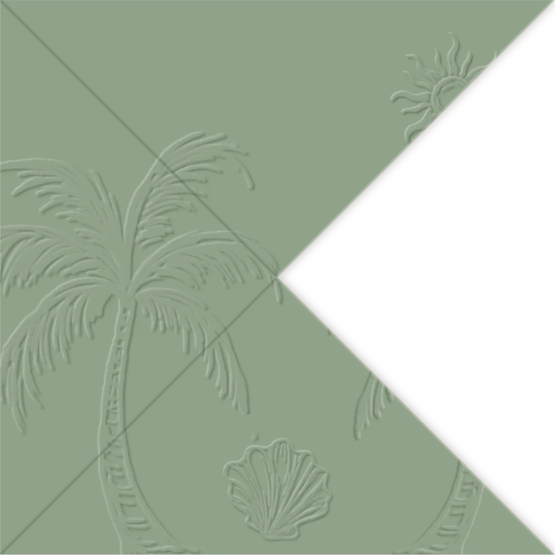

RONALD AGREDA
ELISA SANGURIMA
ELISA SANGURIMA
ARTURO AZCUNES
YOLANDA ACEVEDO
YOLANDA ACEVEDO
SE COMPLACEN EN INVITARLES
AL MATRIMONIO ECLESIÁSTICO DE SUS HIJOS
AL MATRIMONIO ECLESIÁSTICO DE SUS HIJOS
Ronald & Mafe
CEREMONIA QUE SE CELEBRARÁ
EL SÁBADO 03 DE ABRIL DE 2027
A LAS TRES Y MEDIA DE LA TARDE
EN LA CATEDRAL NUESTRA SEÑORA
DE LA ASUNCIÓN,
ISLA DE MARGARITA, VENEZUELA
EL SÁBADO 03 DE ABRIL DE 2027
A LAS TRES Y MEDIA DE LA TARDE
EN LA CATEDRAL NUESTRA SEÑORA
DE LA ASUNCIÓN,
ISLA DE MARGARITA, VENEZUELA
CELEBRACIÓN
DOWNTOWN BEACH CLUB
A LAS SEIS DE LA TARDE
DOWNTOWN BEACH CLUB
A LAS SEIS DE LA TARDE
VESTIMENTA
FORMAL
FORMAL
WHITE PARTY · JUEVES 01 DE ABRIL · 6:00 PM